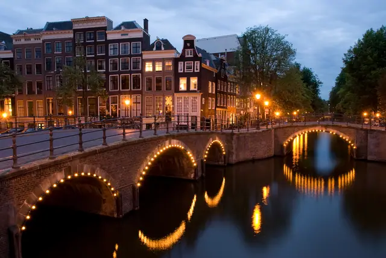
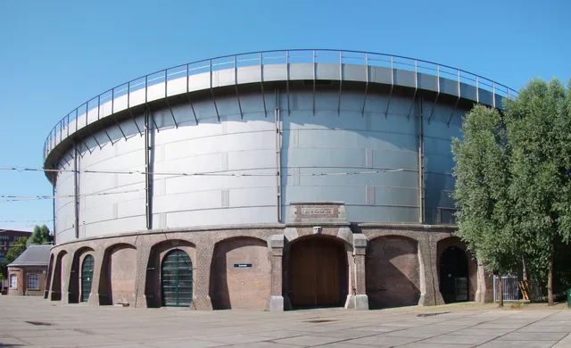
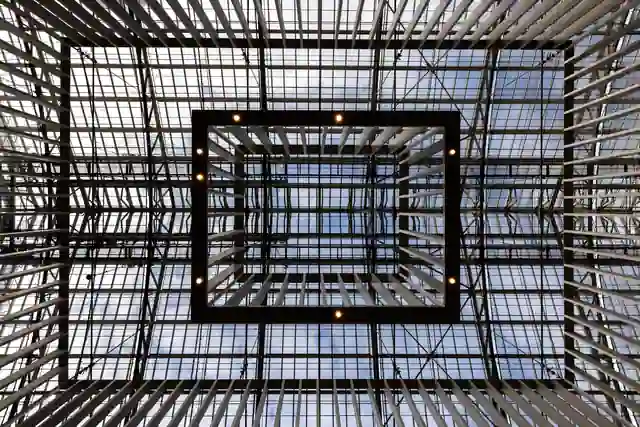
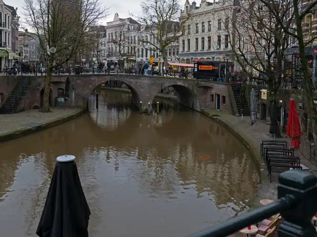
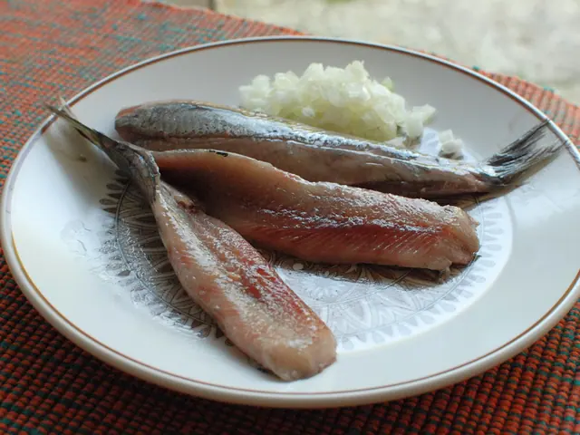
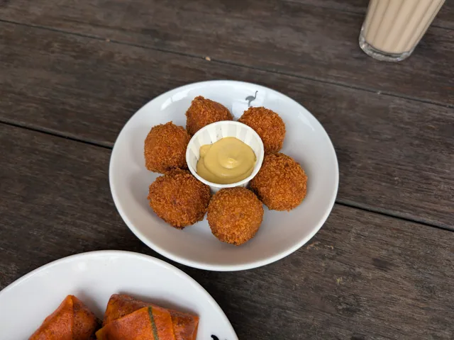
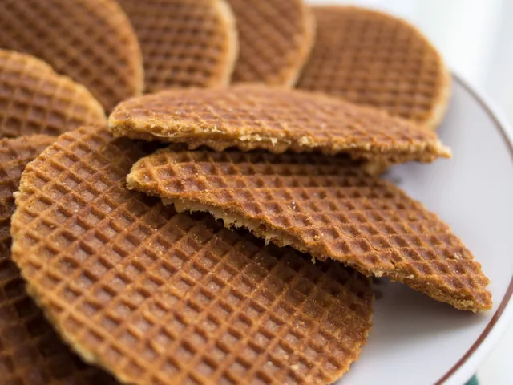
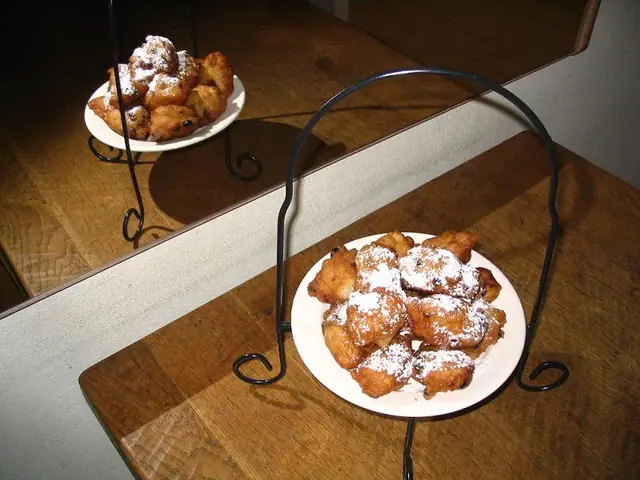
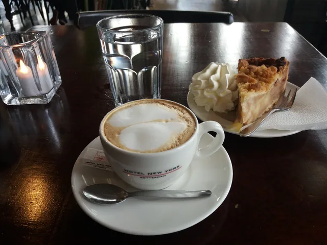

CHAPTER 01 / 0712/5–12/8
Amsterdam
阿姆斯特丹
沿著運河進城，從老城走到日常的街區。
17 世紀，這裡是全世界最富有的貿易城市，三圈半月形運河在 2010 年列入世界遺產。荷蘭殖民過印尼和蘇利南，所以這兩國的菜在這裡道地又不貴。
- 謝謝
- Dank je wel
- 乾杯
- Proost
12/5週六
- 07:50抵達 Schiphol，入境、領行李
- 08:30火車進市區約 15–20 分鐘，轉電車到飯店
- 10:30飯店寄行李
- 11:00老城散步：Centraal → Damrak → Dam 廣場 → Begijnhof 小庭院
- 12:00Greenwoods Singel 早午餐
- 13:00九條街 → Jordaan → Noordermarkt，點心 Winkel 43 蘋果派
- 15:00回飯店入住、補眠
- 18:00Restaurant 't Zwaantje 晚餐：荷蘭家常菜
你知道嗎12/5 是荷蘭的 Pakjesavond，聖尼古拉斯節前夜，荷蘭人今晚交換禮物。滿街都在賣 pepernoten 小薑餅和巧克力字母，買一包當零嘴。
12/6週日
- 10:00De Hallen 室內市集，Oud-West 喝咖啡；想坐下吃就去 nNea Pizza
- 12:00Westergas 週日市集：舊煤氣廠裡的手作、古著、小吃
- 13:30Westerpark 散步，路邊買一顆 oliebollen 炸麵球
- 16:45安妮之家：16:30 前到，大包包不能帶進去已訂
- 19:00Moeders 晚餐：滿牆客人媽媽照片的家常菜館
- 21:00Arendsnest：只賣荷蘭啤酒的運河酒吧，走路 5 分鐘
你知道嗎運河屋很多都往前傾，不是蓋歪：屋頂的吊鉤要把家具從窗戶吊進去，往前傾才不會撞牆。

12/7週一
- 08:30Vondelpark 晨跑 5–6 公里（可選）
- 09:30退房，計程車載行李到 citizenM 寄放，約 15–20 分鐘
- 10:30De Pijp 的 Albert Cuyp 市場：Rudi's 現做焦糖煎餅
- 12:00Warung Spang Makandra 午餐：蘇利南和印尼菜
- 13:00Gerard Doustraat 散步
- 15:00國家博物館已訂
- 17:00Museumplein 聖誕市集
- 18:00燈光節：沿運河走看裝置藝術，步行免費，想坐船再訂
- 19:30citizenM 入住；Hakata Senpachi 博多拉麵，離飯店約 1 公里
你知道嗎Albert Cuyp 市場週一到週六開，週日休息。

12/8週二
- 10:00Amsterdam → Utrecht Centraal，約 35–45 分鐘
- 11:00Lombok 區 Kanaalstraat、Muntgebouw、Molen de Ster 風車
- 12:30Restaurant Kartoffel 午餐：德國豬腳、炸肉排
- 13:30Oudegracht、Domplein、Pandhof 花園，在 Darras 喝咖啡
- 15:30Graaf Floris：運河地窖裡吃烤蘋果
- 16:30Trajectum Lumen 光之路，走完約 1–1.5 小時
- 18:00Kaasbar 晚餐：起司迴轉吧，平日 17:00 開
- 19:30Olivier：老教堂裡的比利時啤酒館，喝一杯再回阿姆斯特丹（約 25 分鐘）
你知道嗎Dom 鐘塔跟教堂是分開的，中間那片空地原本是教堂中殿，1674 年被一場暴風吹垮後就沒再蓋回去。

At the table · 吃喝
阿姆斯特丹・烏特勒支・哈倫
必吃必喝

荷蘭生鯡魚｜切開後配碎洋蔥。 
炸肉丸｜中間留一小碟芥末。 
焦糖煎餅｜薄薄兩片，中間夾焦糖。 
荷蘭炸麵球｜糖粉灑在剛炸好的麵球上。 
荷蘭蘋果派｜切成厚厚一塊，配咖啡。
推薦的店 · ★ 為 Google 評分
-
首選12/5Greenwoods Singel早午餐★ 4.6落地第一頓，在老城路線上
-
首選12/5Winkel 43蘋果派★ 4.5全城最有名，一大塊加鮮奶油約 €6
-
首選12/5Restaurant 't Zwaantje荷蘭家常菜★ 4.5九條街裡的老式小館
-
首選12/6Moeders家常菜★ 4.5牆上掛滿客人媽媽的照片
-
首選12/7Rudi's Original Stroopwafels現做焦糖煎餅★ 4.9Albert Cuyp 市場攤位
-
首選12/7Warung Spang Makandra蘇利南菜★ 4.2咖哩雞配薄餅，便宜大碗
-
首選12/7Hakata Senpachi博多拉麵★ 4.3離 citizenM 約 1 公里，換飯店那晚就近吃
-
首選12/8Restaurant Kartoffel德國豬腳★ 4.4烏特勒支的午餐：德國豬腳、炸肉排
-
首選12/8Kaasbar起司迴轉吧烏特勒支 Lijnmarkt；阿姆斯特丹 De Pijp 也有一家
再 9 間：備選、點心、酒吧、咖啡
-
酒吧12/6Arendsnest荷蘭精釀運河邊，只賣荷蘭啤酒
-
點心12/8Graaf Floris烤蘋果★ 4.4烏特勒支運河地窖
-
酒吧12/8Olivier比利時啤酒開在老教堂裡
-
點心12/18Stubbe's Haring生鯡魚Centraal 旁的小攤
-
酒吧12/18Jopenkerk精釀哈倫，教堂改成的酒廠
-
酒吧12/18Wynand Fockink荷蘭琴酒老品酒室，站著喝
-
酒吧12/18In de Wildeman啤酒老派啤酒吧
-
備選Café Papeneiland蘋果派Jordaan 的棕色老酒館，Winkel 43 排太長就來這
-
酒吧Brouwerij 't IJ精釀風車旁的酒廠